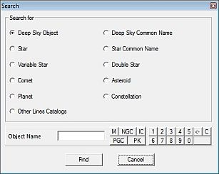

Geavanceerd zoeken

Via het menu: Bewerken → Geavanceerd zoeken, of via het  icoontje op de Zoek groep van de hoofdbalk.
icoontje op de Zoek groep van de hoofdbalk.
Selecteer eerst het door jou gezochte object-type door een klik op de juiste radiobutton. Vul daarna de identificatie van het object in, en druk de enter-toets in.
De knoppen rechts onder maken het je gemakkelijk om de juiste catalogus-afkorting in te vullen. Voor kometen en planetoïden kun je ook nog gebruik maken van de filterknop. Vul links van de knop een deel van de object gegevens in, klik dan op de filterknop. Je kunt daarna rechts uit een lijstje jouw gezochte object selecteren.
Wanneer het programma je object vindt, zal het de kaart zodanig verschuiven om het object in het centrum van de kaart te tonen.
Misschien heb je geen resultaat verkregen omdat het programma het object niet vond binnen de ingestelde catalogi. Klik hier om meer te lezen over catalogi, of klik hier om te lezen over de installatie van extra catalogi.
{kind=link}